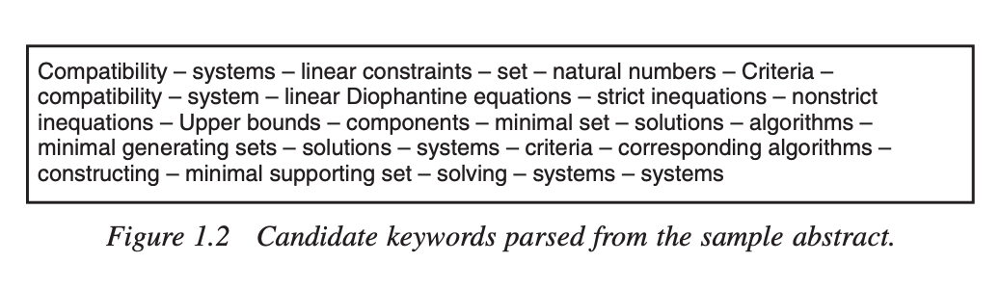
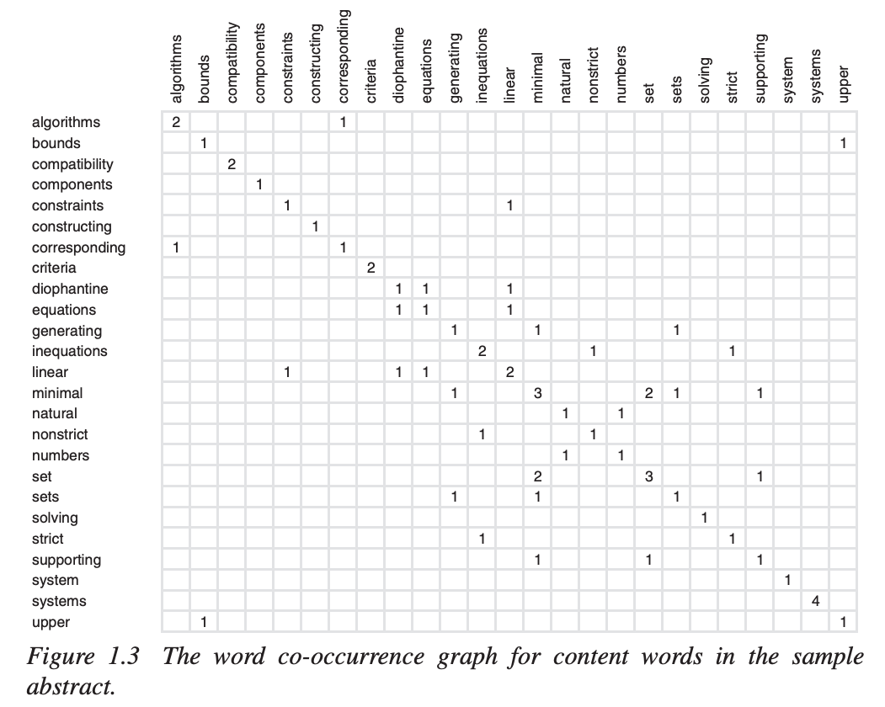

Tfidf and RAKE¶
Downdload dataset: Inspec¶
Inspec consists of 2,000 abstracts of scientific journal papers from Computer Science collected between the years 1998 and 2002. Each document has two sets of keywords assigned: the controlled keywords, which are manually controlled assigned keywords that appear in the Inspec thesaurus but may not appear in the document, and the uncontrolled keywords which are freely assigned by the editors, i.e., are not restricted to the thesaurus or to the document. In our repository, we consider a union of both sets as the ground-truth .[Download source]
!wget https://github.com/LIAAD/KeywordExtractor-Datasets/raw/master/datasets/Inspec.zip
--2021-02-02 10:56:40-- https://github.com/LIAAD/KeywordExtractor-Datasets/raw/master/datasets/Inspec.zip
Resolving github.com (github.com)... 52.69.186.44
Connecting to github.com (github.com)|52.69.186.44|:443... connected.
HTTP request sent, awaiting response...
302 Found
Location: https://raw.githubusercontent.com/LIAAD/KeywordExtractor-Datasets/master/datasets/Inspec.zip [following]
--2021-02-02 10:56:41-- https://raw.githubusercontent.com/LIAAD/KeywordExtractor-Datasets/master/datasets/Inspec.zip
Resolving raw.githubusercontent.com (raw.githubusercontent.com)...
151.101.88.133
Connecting to raw.githubusercontent.com (raw.githubusercontent.com)|151.101.88.133|:443...
connected.
HTTP request sent, awaiting response...
200 OK
Length: 1890788 (1.8M) [application/zip]
Saving to: ‘Inspec.zip’
Inspec.zip 0%[ ] 0 --.-KB/s
Inspec.zip 8%[> ] 154.76K 758KB/s
Inspec.zip 14%[=> ] 272.98K 633KB/s
Inspec.zip 21%[===> ] 400.98K 629KB/s
Inspec.zip 30%[=====> ] 560.98K 667KB/s
Inspec.zip 45%[========> ] 832.98K 800KB/s
Inspec.zip 63%[===========> ] 1.14M 933KB/s
Inspec.zip 82%[===============> ] 1.48M 1.02MB/s
Inspec.zip 100%[===================>] 1.80M 1.12MB/s in 1.6s
2021-02-02 10:56:43 (1.12 MB/s) - ‘Inspec.zip’ saved [1890788/1890788]
!unzip -q Inspec.zip
from os import listdir
docsPaths = listdir('Inspec/docsutf8')
data = []
for p in docsPaths:
textPath = 'Inspec/docsutf8/'+p
keyPath = 'Inspec/keys/'+p[:-3]+'key'
with open(textPath) as fi:
text = fi.read()
with open(keyPath) as fi:
key = fi.read()
data.append({'text':text, 'key':key})
print("make data: DONE")
make data: DONE
print("Total number of texts in the dataset:",len(data))
print("data[1000]:\n\n",data[1000]['text'])
print("\n\nkeywords:\n")
for i in data[1000]['key'].replace('\t','').split("\n"):
print(i)
Total number of texts in the dataset: 2000
data[1000]:
Color plane interpolation using alternating projections
Most commercial digital cameras use color filter arrays to sample red, green,
and blue colors according to a specific pattern. At the location of
each pixel only one color sample is taken, and the values of the other
colors must be interpolated using neighboring samples. This color plane
interpolation is known as demosaicing; it is one of the important tasks
in a digital camera pipeline. If demosaicing is not performed
appropriately, images suffer from highly visible color artifacts. In
this paper we present a new demosaicing technique that uses
inter-channel correlation effectively in an alternating-projections
scheme. We have compared this technique with six state-of-the-art
demosaicing techniques, and it outperforms all of them, both visually
and in terms of mean square error
keywords:
color plane interpolation
alternating projections
digital cameras
demosaicing
color filter arrays
color artifacts
inter-channel correlation
cameras
correlation methods
image colour analysis
interpolation
optical filters
Text Preprocessing¶
In text preprocessing we :
convert to lowercase
remove tages
remove special characters and digits
remove stopwords
# !pip install nltk # install nltk if you have not done before
import re
import nltk
from nltk.corpus import stopwords
from nltk.stem.wordnet import WordNetLemmatizer
#nltk.download('stopwords') # uncomment to download stopwords
#nltk.download('wordnet') # uncomment to download wordnet
stopwords_set = set(stopwords.words('english'))
def preprocess(input_text):
input_text = input_text.lower()
input_text = re.sub("</?.*?>"," <> ", input_text)
input_text = re.sub("(\\d|\\W)+"," ", input_text)
text_string = input_text.split()
text_string = [word for word in text_string if word not in stopwords_set]
lemmatizer = WordNetLemmatizer()
text_string = [lemmatizer.lemmatize(word) for word in text_string]
return ' '.join(text_string)
docs = [preprocess(x['text']) for x in data]
keys = [x['key'].replace('\t','').split('\n')[:-1] for x in data]
print(len(docs),len(keys))
2000 2000
TF-IDF based method¶
In this method, each word in text(tokenized string list) is consider as a candidate. Score of cadidate keyword is define by TF-IDF score. The k candidate keywords with the highest TF-IDF score are selected as keywords.
TF-IDF(term frequency–inverse document frequency) is a numerical statistic which reflect the importance of word in a text while considering it occurence within a group of documents(corpus).
Consider a corpus with \(N\) documents. Let \(t_{i,j}\) be frequency of term \(w_i (i=1,\cdots,W)\) in document \(D_j\) and \(df_i\) be number of documents which term \(w_i\) occurences in. TF-IDF score of term \(w_i\) is defined by \(\operatorname{tfidf}(i)\).
In the following implimentation, we use tools offered by scikitlearn.
CountVectorizer
TfidfTransformer
# !pip install sklearn # uncomment to install sklearn
from sklearn.feature_extraction.text import CountVectorizer, TfidfTransformer
vectorizer = CountVectorizer(max_df=0.95, max_features=20000, ngram_range=(1,4))
word_freq_vec = vectorizer.fit_transform(docs)
transformer = TfidfTransformer(smooth_idf=True, use_idf=True)
transformer.fit(word_freq_vec)
TfidfTransformer()
def extract_topk(features, sorted_words, k=10):
sorted_words = sorted_words[:k]
scores = []
f_list = []
for i, score in sorted_words:
scores.append(round(score, 3))
f_list.append(features[i])
result = {}
for i in range(len(f_list)):
result[f_list[i]] = scores[i]
return result
def get_keywords(idx, docs):
tfidf_vec = transformer.transform(vectorizer.transform([docs[idx]]))
co_matrix = tfidf_vec.tocoo()
sorted_words = sorted(zip(co_matrix.col, co_matrix.data), key=lambda x: (x[1],x[0]), reverse=True)
features = vectorizer.get_feature_names()
keywords = extract_topk(features, sorted_words, 10)
return keywords
def print_keywords(idx, keywords, data, ans):
ans = [preprocess(a) for a in ans[:len(keywords)]]
print("\n=====Abstract=====")
print(data[idx]['text'])
print("\n===Keywords===")
for k in keywords:
if k in ans:
print("🟢",end='')
print(k,keywords[k])
print("\n===Keywords by Author===")
ext_keys = [i for i in keywords]
for i in ans:
if i in ext_keys:
print("🙆♂️",end="")
print(i)
sample_idx = 238
keywords=get_keywords(sample_idx, docs)
print_keywords(sample_idx,keywords, data, keys[sample_idx])
=====Abstract=====
Fractional differentiation in passive vibration control
From a single-degree-of-freedom model used to illustrate the concept of
vibration isolation, a method to transform the design for a suspension
into a design for a robust controller is presented. Fractional
differentiation is used to model the viscoelastic behaviour of the
suspension. The use of fractional differentiation not only permits
optimisation of just four suspension parameters, showing the
'compactness' of the fractional derivative operator, but also leads to
robustness of the suspension's performance to uncertainty of the sprung
mass. As an example, an engine suspension is studied
===Keywords===
🟢suspension 0.537
fractional 0.353
🟢fractional differentiation 0.341
🟢differentiation 0.289
vibration 0.164
🟢vibration isolation 0.118
use fractional 0.118
single degree freedom 0.118
single degree 0.118
operator also 0.118
===Keywords by Author===
🙆♂️fractional differentiation
passive vibration control
🙆♂️vibration isolation
🙆♂️suspension
robust controller
viscoelastic behaviour
sprung mass
engine suspension
damping
🙆♂️differentiation
With this method, four of extracted top ten keywords are in keywords set selected by author. This result is somehow acceptable. However, to calculate TF-IDF score, a collection of documents(corpus) is required as reference data. Therefore, characteristic of reference data(corpus) highly affect the importance of word in single document. Keywords that occur in many documents within the corpus are not likely to be selected as statistically discriminating by lowering the TF-IDF score value.
RAKE: Rapid Automatic Keyword Extraction¶
(Ref: Rose, Stuart & Engel, Dave & Cramer, Nick & Cowley, Wendy. (2010). Automatic Keyword Extraction from Individual Documents. 10.1002/9780470689646.ch1.)
RAKE is a keyword extraction method which is effectively operates on individual document. RAKE is based on an observation that keywords frequently contain multiple words but rarely contain standard punctuation or stop words.
RAKE get a list of stop words, a set of phrase delimiters, and a set of word delimiters as inputs. Base on the information from stop words and phrase delimiters, RAKE makes partitions of the document text into candidate keywords.
Next, co-occurrences graph of words within these candidate keywords are generated. This graph is significient in identifying word cooccurrence without the application of an arbitrarily sized sliding window.
Several metrics are used for calculating word scores
word frequency : \(freq(w)\)
word degree : \(deg(w)\)
ratio of degree to frequency : \(\frac{deg(w)}{freq(w)}\)
In summary, \(deg(w)\) favors words that occur often and in longer candidate keywords. Words that occur frequently regardless of the number of words with which they co-occur are favored by \(freq(w)\). Words that predominantly occur in longer candidate keywords are favored by \(deg(w)/freq(w)\) [Ref].
The score for each candidate keyword is computed as the sum of its member word scores.
Example of score calculation from Automatic Keyword Extraction from Individual Documents




# !pip install rake-nltk # uncomment to install rake-nltk
from rake_nltk import Rake
def get_keywords_rake(docs, n=10):
rk = Rake()
rk.extract_keywords_from_text(docs)
keywords = rk.get_ranked_phrases_with_scores()[0:n]
return keywords
def print_keywords_rake(idx, keywords, data, ans):
ans = [preprocess(a) for a in ans[:len(keywords)]]
print("\n=====Abstract=====")
print(data[idx]['text'])
print("\n===Keywords===")
for k in keywords:
if k[1] in ans:
print("🟢",end="")
print(k[1],k[0])
print("\n===Keywords by Author===")
ext_keys = [i[1] for i in keywords]
for i in ans:
if i in ext_keys:
print("🙆♂️",end="")
print(i)
sample_idx = 238
keywords=get_keywords_rake(data[sample_idx]['text'])
print_keywords_rake(sample_idx,keywords, data, keys[sample_idx])
=====Abstract=====
Fractional differentiation in passive vibration control
From a single-degree-of-freedom model used to illustrate the concept of
vibration isolation, a method to transform the design for a suspension
into a design for a robust controller is presented. Fractional
differentiation is used to model the viscoelastic behaviour of the
suspension. The use of fractional differentiation not only permits
optimisation of just four suspension parameters, showing the
'compactness' of the fractional derivative operator, but also leads to
robustness of the suspension's performance to uncertainty of the sprung
mass. As an example, an engine suspension is studied
===Keywords===
🟢passive vibration control 8.5
fractional derivative operator 8.5
four suspension parameters 8.0
freedom model used 7.0
🟢vibration isolation 4.5
🟢fractional differentiation 4.5
🟢viscoelastic behaviour 4.0
🟢sprung mass 4.0
🟢robust controller 4.0
permits optimisation 4.0
===Keywords by Author===
🙆♂️fractional differentiation
🙆♂️passive vibration control
🙆♂️vibration isolation
suspension
🙆♂️robust controller
🙆♂️viscoelastic behaviour
🙆♂️sprung mass
engine suspension
damping
differentiation
Here we are! With this method, six of extracted top ten keywords are in keywords set selected by author. This is a great work!
According to the RAKE’s paper, RAKE achieves higher precision and similar recall in comparison to existing techniques. RAKE takes a simple set of input parameters and automatically extracts keywords in a single pass, making it suitable for a wide range of documents and collections.
sample_idx = 238
keywords=get_keywords_rake(data[sample_idx]['text'])
print_keywords_rake(sample_idx,keywords, data, keys[sample_idx])
=====Abstract=====
Fractional differentiation in passive vibration control
From a single-degree-of-freedom model used to illustrate the concept of
vibration isolation, a method to transform the design for a suspension
into a design for a robust controller is presented. Fractional
differentiation is used to model the viscoelastic behaviour of the
suspension. The use of fractional differentiation not only permits
optimisation of just four suspension parameters, showing the
'compactness' of the fractional derivative operator, but also leads to
robustness of the suspension's performance to uncertainty of the sprung
mass. As an example, an engine suspension is studied
===Keywords===
🟢passive vibration control 8.5
fractional derivative operator 8.5
four suspension parameters 8.0
freedom model used 7.0
🟢vibration isolation 4.5
🟢fractional differentiation 4.5
🟢viscoelastic behaviour 4.0
🟢sprung mass 4.0
🟢robust controller 4.0
permits optimisation 4.0
===Keywords by Author===
🙆♂️fractional differentiation
🙆♂️passive vibration control
🙆♂️vibration isolation
suspension
🙆♂️robust controller
🙆♂️viscoelastic behaviour
🙆♂️sprung mass
engine suspension
damping
differentiation
Evaluation¶
We use Mean Average Precision(MAP) and Mean Reciprocal Rank(MRR) value as evaluation matrics.
[How to calculate MAP and MRR]
def MAPscore(y_true, y_pred):
rel = 0
pre = []
for i in range(len(y_pred)):
if y_pred[i] in y_true:
rel += 1
pre.append(rel/(i+1))
if rel>0:
return sum(pre)/len(pre)
else:
return 0
def MRRscore(y_true, y_pred):
for i in range(len(y_pred)):
if y_pred[i] in y_true:
break
return 1/(i+1)
test_num = 500
test_sample_idx = list(range(2000-test_num,2000))
print(len(test_sample_idx))
500
%%time
MAPscores_rake = []
MRRscores_rake = []
for idx in test_sample_idx:
y_true = keys[idx]
keywords = get_keywords_rake(data[idx]['text'])
y_pred = [i[1] for i in keywords]
MAPscores_rake.append(MAPscore(y_true,y_pred))
MRRscores_rake.append(MRRscore(y_true,y_pred))
sum(MAPscores_rake)/test_num,sum(MRRscores_rake)/test_num
CPU times: user 539 ms, sys: 35.1 ms, total: 574 ms
Wall time: 581 ms
(0.24264513794406672, 0.2639031746031743)
%%time
MAPscores_tfidf = []
MRRscores_tfidf = []
for idx in test_sample_idx:
y_true = keys[idx]
keywords = get_keywords(idx, docs)
y_pred = [i for i in keywords]
MAPscores_tfidf.append(MAPscore(y_true,y_pred))
MRRscores_tfidf.append(MRRscore(y_true,y_pred))
sum(MAPscores_tfidf)/test_num,sum(MRRscores_tfidf)/test_num
CPU times: user 12.6 s, sys: 171 ms, total: 12.7 s
Wall time: 14 s
(0.17496984126984136, 0.24119365079364993)